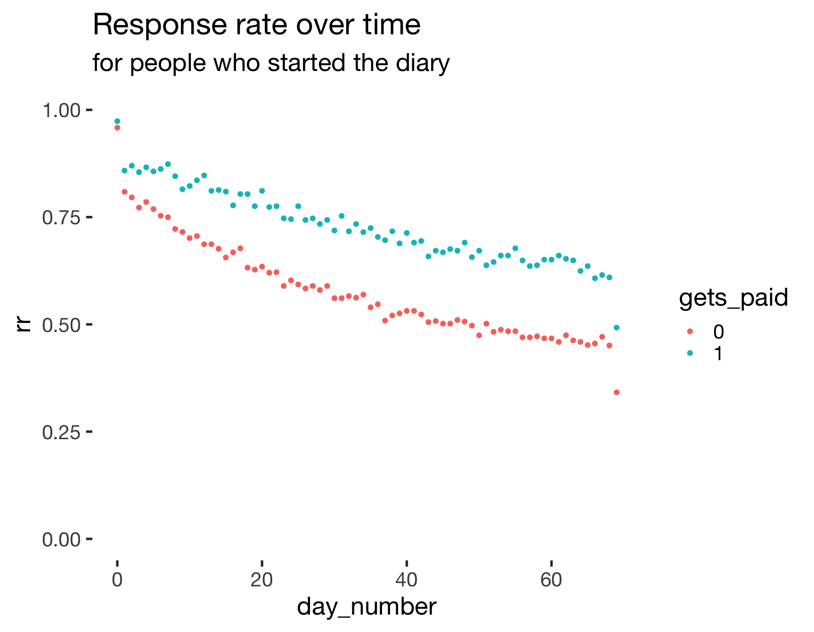
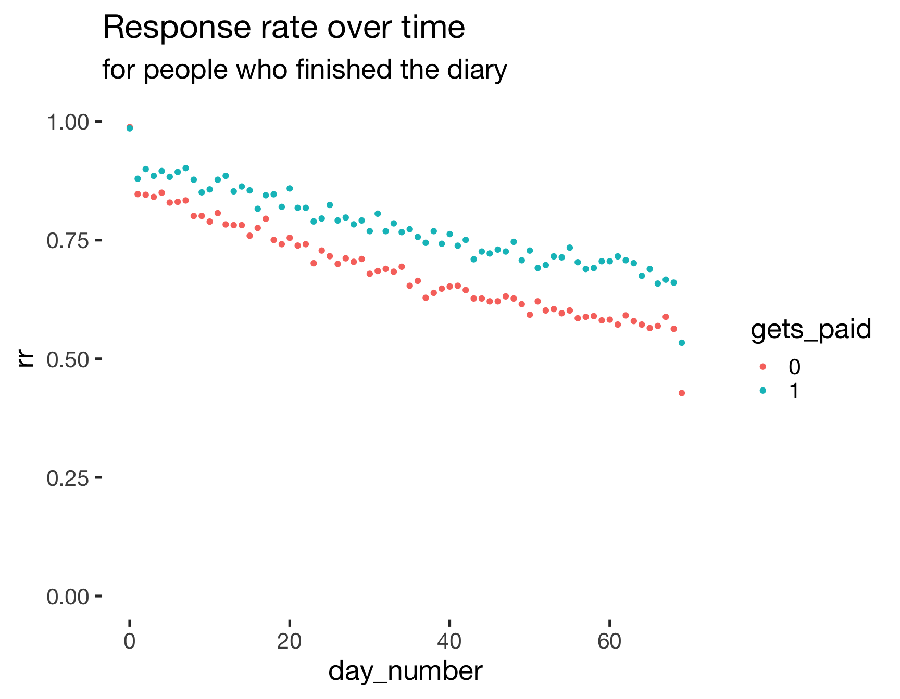
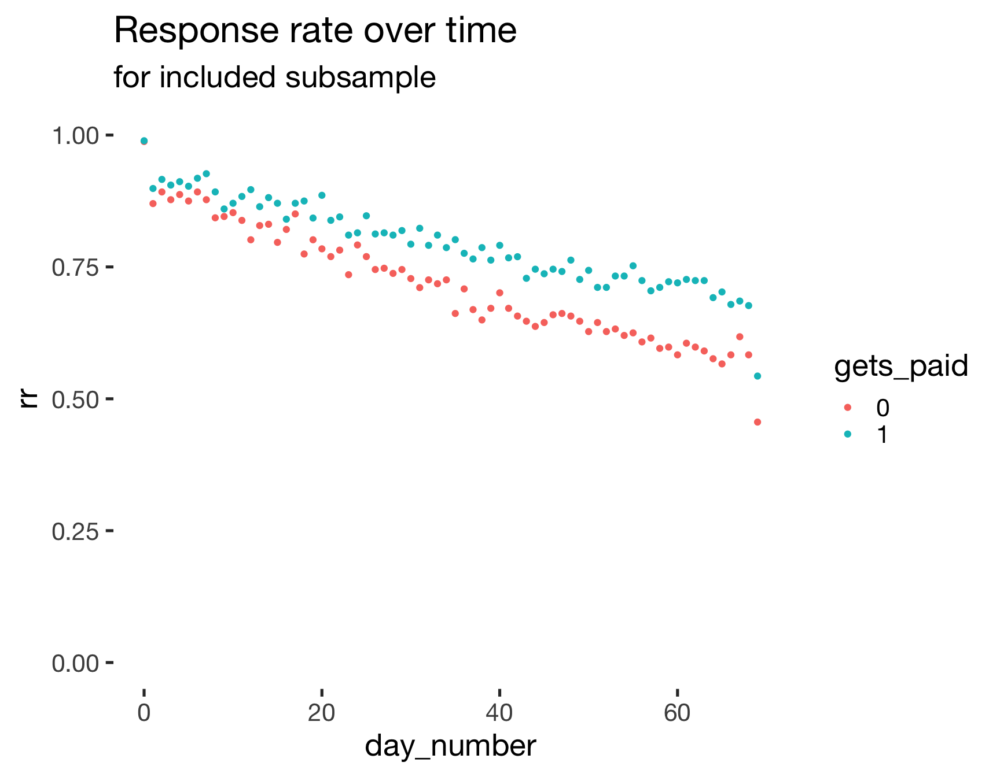
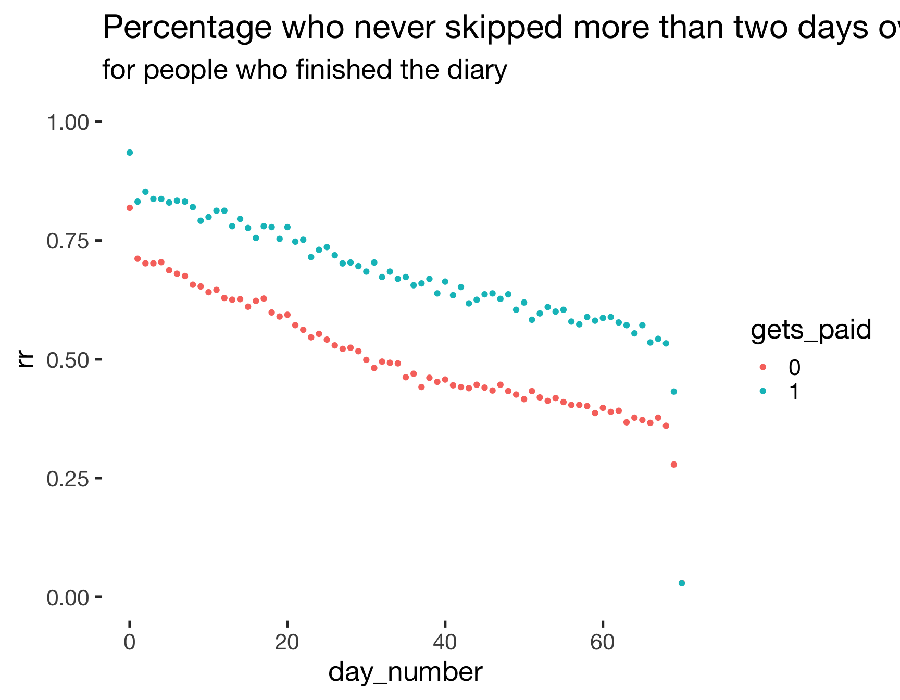
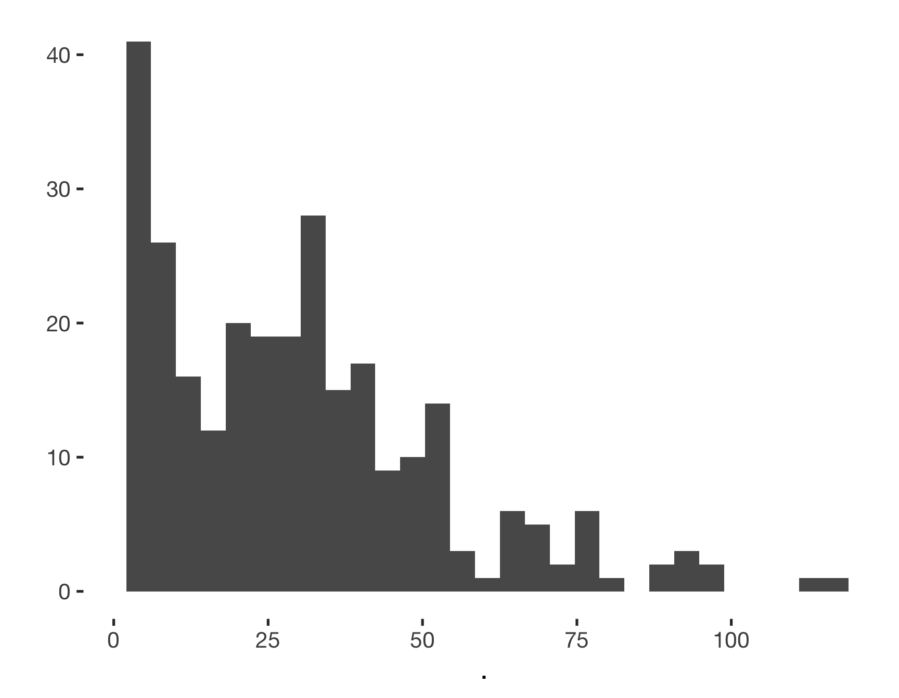
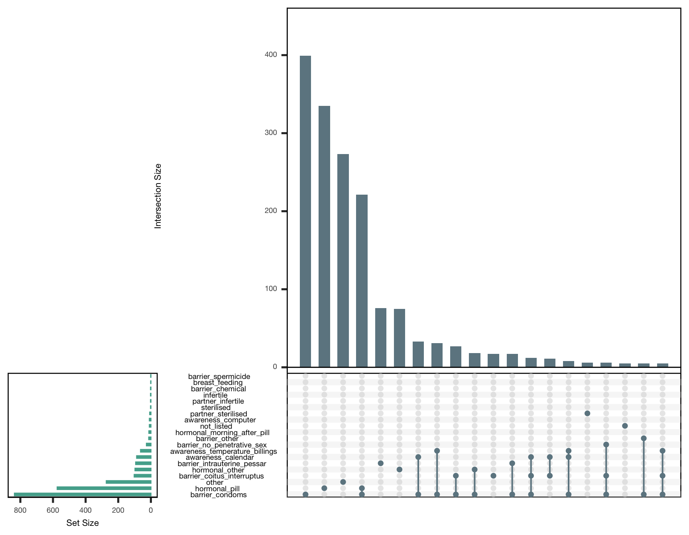

source("0_helpers.R")
load("data/cleaned_selected.rdata")
opts_chunk$set(warning = F, message = F, error = T)
all_surveys <- all_surveys %>%
mutate(relationship_duration = duration_relationship_years + duration_relationship_month/12)
library(knitr)
opts_chunk$set(fig.width = 9, fig.height = 7, cache = T, warning = F, message = F, cache = F, error = T)
library(kableExtra)Flow chart of the steps of the menstrual cycle diary study.
began_s1_demo = sum(!is.na(s1_demo$created))
ended_s1_demo = sum(!is.na(s1_demo$ended))
diary <- s1_filter %>% left_join(diary, by = c('session', 'short'), suffix = c("_filter", ""))
ended_pre = diary %>% filter(!is.na(ended_initial)) %>% ungroup() %>% summarise(n = n_distinct(session)) %>% pull(n)
diary %>% group_by(gets_paid) %>% summarise(n = sum(!is.na(ended_initial[!duplicated(session)]), n = n_distinct(session)))## # A tibble: 2 x 2
## gets_paid n
## <chr> <int>
## 1 0 1893
## 2 1 1087at_least_one_diary_entry = diary %>% group_by(session) %>% summarise(n = n_nonmissing(ended_diary)) %>% filter(n >= 1) %>% nrow()
at_least_20_diary_entries = diary %>% group_by(session) %>% summarise(n = n_nonmissing(ended_diary)) %>% filter(n >= 20) %>% nrow()
at_least_50_diary_entries = diary %>% group_by(session) %>% summarise(n = n_nonmissing(ended_diary)) %>% filter(n >= 50) %>% nrow()
in_relationship = sum(s1_demo$hetero_relationship, na.rm = T)
singles = sum(! s1_demo$hetero_relationship, na.rm = T)
at_least_one_diary_entry = s3_daily %>% group_by(session) %>% summarise(n = n_nonmissing(ended)) %>% filter(n >= 1) %>% nrow()
at_least_20_diary_entries = s3_daily %>% group_by(session) %>% summarise(n = n_nonmissing(ended)) %>% filter(n >= 20) %>% nrow()
at_least_50_diary_entries = s3_daily %>% group_by(session) %>% summarise(n = n_nonmissing(ended)) %>% filter(n >= 50) %>% nrow()
mean_diary_entries <- s3_daily %>% group_by(session) %>% summarise(n = n_nonmissing(ended)) %>% summarise(mean(n))
mean_diary_entries_by_payment <- s1_filter %>%
select(-ended) %>% left_join(s3_daily, by = 'session') %>%
group_by(gets_paid, session) %>%
summarise(n = n_nonmissing(ended)) %>%
filter(n > 0) %>%
group_by(gets_paid) %>%
summarise(responses = mean(n), n = n_distinct(session))
response_rate_over_time <- diary %>%
filter(day_number >= 0, day_number < 70) %>%
left_join(s1_filter, by = 'session', suffix = c("", "_filter")) %>%
group_by(gets_paid) %>%
mutate(
n = n_distinct(session)
) %>%
group_by(gets_paid, day_number) %>%
summarise(
n = unique(n),
entries = n_nonmissing(ended_diary),
rr = entries / unique(n))
ggplot(response_rate_over_time, aes(day_number, rr, colour = gets_paid)) + geom_point() +
ggtitle("Response rate over time", "for people who started the diary") + ylim(0,1)
mean_diary_entries_finishers <- s4_followup %>% select(-ended) %>% left_join(s3_daily, by = 'session') %>% group_by(session) %>% summarise(n = n_nonmissing(ended)) %>% summarise(mean(n))
response_rate_over_time <- s4_followup %>% select(-ended) %>%
left_join(diary %>% select(session, day_number, created_diary, ended_diary)) %>% filter(day_number >= 0, day_number < 70) %>%
left_join(s1_filter, by = 'session', suffix = c("", "_filter")) %>%
group_by(gets_paid) %>%
mutate(
n = n_distinct(session)
) %>%
group_by(gets_paid, day_number) %>%
summarise(
entries = n_nonmissing(ended_diary),
rr = entries / unique(n))
ggplot(response_rate_over_time, aes(day_number, rr, colour = gets_paid)) +
geom_point() +
ggtitle("Response rate over time", "for people who finished the diary") + ylim(0,1)
response_rate_over_time <- diary %>%
# I am leaving in days that we excluded post-hoc (e.g., because fertility was not estimable, to show the real response rate, irrespective of diary-data-based exclusions)
filter(reasons_for_exclusion == reasons_for_exclusion_diary) %>%
select(session, day_number, created_diary, ended_diary) %>%
filter(day_number >= 0, day_number < 70) %>%
left_join(s1_filter, by = 'session', suffix = c("", "_filter")) %>%
group_by(gets_paid) %>%
mutate(
n = n_distinct(session)
) %>%
group_by(gets_paid, day_number) %>%
summarise(
n = unique(n),
entries = n_nonmissing(ended_diary),
rr = entries / unique(n))
ggplot(response_rate_over_time, aes(day_number, rr, colour = gets_paid)) +
geom_point() +
ggtitle("Response rate over time", "for included subsample") + ylim(0,1)
nsmt2d_over_time <- s4_followup %>% select(-ended) %>%
left_join(diary %>% select(session, day_number, never_skipped_more_than_2, created_diary, ended_diary)) %>%
left_join(s1_filter, by = 'session', suffix = c("", "_filter")) %>%
left_join(mean_diary_entries_by_payment) %>%
group_by(gets_paid, day_number) %>%
summarise(entries = sum(as.numeric(never_skipped_more_than_2), na.rm = T),
rr = entries / unique(n))
ggplot(nsmt2d_over_time, aes(day_number, rr, colour = gets_paid)) +
geom_point() +
ggtitle("Percentage who never skipped more than two days over time", "for people who finished the diary") + ylim(0,1)
mean_finishing_personality_by_payment <- s1_demo %>%
left_join(s1_filter, by = 'session', suffix = c("_demo", "")) %>%
left_join(s2_initial,by ='session', suffix = c("", "_initial")) %>%
group_by(gets_paid) %>%
summarise(finish_demo = n_nonmissing(ended_demo),
finish_initial = n_nonmissing(ended_initial), n = n(),
prc_ini_over_demo = round(100*finish_initial/finish_demo),
consc = mean(bfi_consc,na.rm=T))
kable(mean_finishing_personality_by_payment)| gets_paid | finish_demo | finish_initial | n | prc_ini_over_demo | consc |
|---|---|---|---|---|---|
| 0 | 1050 | 871 | 1050 | 83 | 3.577 |
| 1 | 557 | 540 | 557 | 97 | 3.478 |
| NA | 0 | 0 | 53 | NaN | NaN |
mean_finishing_follow_up_by_payment <- s1_filter %>% select(-ended) %>% right_join(s2_initial,by ='session') %>% left_join(s4_followup, by = 'session', suffix = c("_initial", "_followup")) %>% group_by(gets_paid) %>% summarise(followup = n_nonmissing(ended_followup), initial = n_nonmissing(ended_initial), n(), prc_fu_over_initial = round(100*followup/initial))
kable(mean_finishing_follow_up_by_payment)| gets_paid | followup | initial | n() | prc_fu_over_initial |
|---|---|---|---|---|
| 0 | 656 | 871 | 958 | 75 |
| 1 | 484 | 540 | 554 | 90 |
fertile_known_man_known = diary_social %>% group_by(session, created) %>%
summarise(n = n_nonmissing(person_attractiveness_short_term)) %>%
group_by(session) %>% summarise(n = sum(n)) # fertility known, man known
fertile_known_man_known$n %>% qplot() + xlim(1,NA)
fertile_known_person_known = diary_social %>% group_by(session, created) %>%
summarise(n = n_nonmissing(person_sex)) %>%
group_by(session) %>% summarise(n = sum(n)) # fertility known, man known
finished_timespent = s4_timespent %>% group_by(session) %>% summarise(n = n_nonmissing(ended)) %>% filter(n >= 1) %>% nrow()
timespent_gt3 = s4_timespent %>% group_by(session) %>% summarise(n = n_nonmissing(ended)) %>% filter(n > 3) %>% nrow()
timespent_men = network %>% group_by(session) %>% filter(person_sex == 2, person_relationship_to_anchor != "biological_relative") %>% summarise(n = n_nonmissing(ended)) %>% filter(n > 0) %>% nrow()
timespent_3men = network %>% group_by(session) %>% filter(person_sex == 2, person_relationship_to_anchor != "biological_relative") %>% summarise(n = n_nonmissing(ended)) %>% filter(n > 2) %>% nrow()
fertile_known_man_known_participants = fertile_known_man_known %>% filter(n > 0) %>% nrow()
fertile_known_person_known_participants = fertile_known_person_known %>% filter(n > 0) %>% nrow()
finished_followup = sum(!is.na(s4_followup$ended))
# all_surveys %>% mutate(
# should_be_done = created_demo + days(70) < today()
# ) %>% filter(should_be_done == T) %>% xtabs(~ is.na(ended), .)
# all_surveys %>% mutate(
# should_be_done = created_demo + days(70) < today()
# ) %>% left_join(s3_daily %>% group_by(session) %>% summarise(n = n_nonmissing(ended))) %>%
# filter(should_be_done == T, n > 40) %>% xtabs(~ is.na(ended), .)
all_surveys %>% mutate(should_be_done = created_demo + days(70) < today()) %>%
left_join( s4_timespent %>% group_by(session) %>% summarise(n_timespent = n_nonmissing(ended)), by = 'session') %>%
filter(hetero_relationship == 0, should_be_done == T, n_timespent > 0, !is.na(n_timespent)) %>% nrow()## [1] 349all_surveys %>% mutate(should_be_done = created_demo + days(70) < today()) %>%
left_join( s4_timespent %>% group_by(session) %>% summarise(n_timespent = n_nonmissing(ended)), by = 'session') %>%
filter(hetero_relationship == 0 & should_be_done == T & (is.na(n_timespent) | n_timespent == 0)) %>% nrow()## [1] 184library(UpSetR)
comma_separated_to_columns <- function(df, col) {
colname <- deparse(substitute(col))
df$splitcol <- df %>% pull(colname)
separate_rows(df, splitcol, convert = TRUE, sep = ", ") %>%
mutate(splitcol = if_else(is.na(splitcol), "no",
if_else(splitcol == "" |
splitcol %in% c(), "other", as.character(splitcol)))) %>%
mutate(#splitcol = stringr::str_c(colname, "_", splitcol),
value = 1) %>%
spread(splitcol, value, fill = 0) %>%
select(-colname)
}
library(UpSetR)
all_surveys %>% select(session, contraception_method) %>%
comma_separated_to_columns(contraception_method) %>%
select(-session) %>%
as.data.frame() %>%
{
upset(., ncol(.), 20, show.numbers = TRUE, order.by = "freq",
main.bar.color = "#6E8691",
matrix.color = "#6E8691",
sets.bar.color = "#53AC9B")
}
women <- all_surveys %>% filter(reasons_for_exclusion == "")
dig1 <- function(x) { sprintf("%.1f", x) }
dig2 <- function(x) { sprintf("%.2f", x) }
pct <- function(x) { sprintf("%.0f", x*100) }
remove_p_values <- function(planned_plot, call_parts = 3:10) {
subtitle <- as.list(planned_plot$labels$subtitle)
subtitle[call_parts] <- NULL
planned_plot$labels$subtitle <- as.call(subtitle)
planned_plot
}
comps = data_frame(Variable = character(0),
`HC user - Mean (SD)` = character(0),
`Cycling - Mean (SD)` = character(0),
`99% CI` = character(0),
)
compare_by_group = function(var, data, type = "np", ...) {
var_s <- enquo(var)
var <- rlang::as_name(var_s)
sd_hc = sd(data[data$hormonal_contraception == 1,][[var]], na.rm = T)
sd_nc = sd(data[data$hormonal_contraception == 0,][[var]], na.rm = T)
data$`Hormonal contraception` = forcats::fct_relevel( forcats::fct_recode(forcats::as_factor(data$hormonal_contraception), "Cycling" = "FALSE", "HC user" = "TRUE"), "HC user")
comp = as.formula(paste0("`",var, "` ~ `Hormonal contraception`"))
tt = t.test(comp, data = data, conf.level = 0.99)
summary = data_frame(Variable = var,
`HC user - Mean (SD)` = paste0(dig1(tt$estimate[1])," (", dig1(sd_hc),")"),
`Cycling - Mean (SD)` = paste0(dig1(tt$estimate[2]), " (", dig1(sd_nc), ")"),
`99% CI` = paste(dig1(tt$conf.int), collapse = ";")
)
rownames(summary) = NULL
comps <<- bind_rows(comps, summary)
data[[var]] <- data[[var]] %>% zap_attributes()
planned_plot <- ggstatsplot::ggbetweenstats(
data = data,
x = `Hormonal contraception`,
y = !! var_s,
messages = FALSE,
conf.level = 0.99,
type = type, ...,
ggtheme = theme_cowplot(font_size = 18)
) + # further modification outside of ggstatsplot
scale_color_manual("", values = c("Cycling" = "red", "HC user" = "black"), guide = F) +
# scale_x_discrete("Hormonal contraception", labels = c("1" = "HC user", "2" = "Cycling")) +
scale_fill_manual("", values = c("Cycling" = "red", "HC user" = "black"), guide = F)
remove_p_values(planned_plot)
}
library(ggstatsplot)
library(cowplot)Comparison of the hormonal contraception users (our quasi-control group) with women who are regularly cycling. The plot shows the distribution of values in each group and the results of a Mann-Whitney U test.
{ ggbarstats(women %>% mutate(relationship_status=as_factor(relationship_status)),
relationship_status,
hormonal_contraception,
messages = FALSE,
conf.level = 0.99,
bf.message = F,
ggtheme = theme_cowplot(font_size = 18)
) + # further modification outside of ggstatsplot
scale_x_discrete("Hormonal contraception", labels = c("TRUE" = "HC user", "FALSE" = "Cycling"))
} %>%
remove_p_values(call_parts = 3:12)Comparison of the hormonal contraception users (our quasi-control group) with women who are regularly cycling. The plot shows the distribution of categories in each group and the results of a Chi-Square test for equal distribution.
women$`Age at first sex (years)` <- women$first_time
compare_by_group(`Age at first sex (years)`, women)Comparison of the hormonal contraception users (our quasi-control group) with women who are regularly cycling. The plot shows the distribution of values in each group and the results of a Mann-Whitney U test.
women$`Age at menarche (years)` <- women$menarche
compare_by_group(`Age at menarche (years)`, women)Comparison of the hormonal contraception users (our quasi-control group) with women who are regularly cycling. The plot shows the distribution of values in each group and the results of a Mann-Whitney U test.
women$`Relationship duration (years)` <- women$relationship_duration
compare_by_group(`Relationship duration (years)`, women) + scale_y_sqrt(breaks = c(1,5, 10, 20, 30))Comparison of the hormonal contraception users (our quasi-control group) with women who are regularly cycling. The plot shows the distribution of values in each group and the results of a Mann-Whitney U test.
women$`Avg. cycle length (days)` <- women$menstruation_length
compare_by_group(`Avg. cycle length (days)`, women)Comparison of the hormonal contraception users (our quasi-control group) with women who are regularly cycling. The plot shows the distribution of values in each group and the results of a Mann-Whitney U test.
women$`Cycle regularity` <- women$menstruation_regularity
compare_by_group(`Cycle regularity`, women) +
scale_y_continuous(
labels = c("1" = "no fluctuation",
"2" = "1-2 days",
"3" = "3-5 days",
"4" = ">5 days"))Comparison of the hormonal contraception users (our quasi-control group) with women who are regularly cycling. The plot shows the distribution of values in each group and the results of a Mann-Whitney U test.
women$`No. lifetime sexual partners` <- women$number_sexual_partner
compare_by_group(`No. lifetime sexual partners`, women, type = "r") %>%
remove_p_values(call_parts = 3:4) +
scale_y_sqrt(breaks = c(1,5, 10, 20, 50, 100))Comparison of the hormonal contraception users (our quasi-control group) with women who are regularly cycling. The plot shows the distribution of values in each group and the results of Yuen’s test for trimmed means (10% trimmed).
Comparison of the hormonal contraception users (our quasi-control group) with women who are regularly cycling. The plot shows the distribution of values in each group and the results of a Mann-Whitney U test.
Comparison of the hormonal contraception users (our quasi-control group) with women who are regularly cycling. The plot shows the distribution of values in each group and the results of a Mann-Whitney U test.
Comparison of the hormonal contraception users (our quasi-control group) with women who are regularly cycling. The plot shows the distribution of values in each group and the results of a Mann-Whitney U test.
Comparison of the hormonal contraception users (our quasi-control group) with women who are regularly cycling. The plot shows the distribution of values in each group and the results of a Mann-Whitney U test.
Comparison of the hormonal contraception users (our quasi-control group) with women who are regularly cycling. The plot shows the distribution of values in each group and the results of a Mann-Whitney U test.
women$`Sociosexuality Inventory Revised` <- women$soi_r
compare_by_group(`Sociosexuality Inventory Revised`, women)Comparison of the hormonal contraception users (our quasi-control group) with women who are regularly cycling. The plot shows the distribution of values in each group and the results of a Mann-Whitney U test.
women$`Relationship satisfaction` <- women$relationship_satisfaction
compare_by_group(`Relationship satisfaction`, women)Comparison of the hormonal contraception users (our quasi-control group) with women who are regularly cycling. The plot shows the distribution of values in each group and the results of a Mann-Whitney U test.
Comparison of the hormonal contraception users (our quasi-control group) with women who are regularly cycling. The plot shows the distribution of values in each group and the results of a Mann-Whitney U test.
{ ggbarstats(women,
net_income,
hormonal_contraception,
messages = FALSE,
bf.message = F,
conf.level = 0.99,
ggtheme = theme_cowplot(font_size = 18)
) + # further modification outside of ggstatsplot
scale_x_discrete("Hormonal contraception", labels = c("TRUE" = "HC user", "FALSE" = "Cycling"))} %>%
remove_p_values(call_parts = 3:12)Comparison of the hormonal contraception users (our quasi-control group) with women who are regularly cycling. The plot shows the distribution of categories in each group and the results of a Chi-Square test for equal distribution.
{ ggbarstats(women,
living_situation,
hormonal_contraception,
messages = FALSE,
conf.level = 0.99,
bf.message = F,
ggtheme = theme_cowplot(font_size = 18)
) + # further modification outside of ggstatsplot
scale_x_discrete("Hormonal contraception", labels = c("TRUE" = "HC user", "FALSE" = "Cycling")) } %>%
remove_p_values(call_parts = 3:12)Comparison of the hormonal contraception users (our quasi-control group) with women who are regularly cycling. The plot shows the distribution of categories in each group and the results of a Chi-Square test for equal distribution.
comps %>%
kable(caption = "Means, SDs, and differences between both groups for all continuous variables") %>%
footnote("99% CI interval of the difference.") %>%
kable_styling()| Variable | HC user - Mean (SD) | Cycling - Mean (SD) | 99% CI |
|---|---|---|---|
| Age (years) | 23.7 (4.4) | 26.3 (5.9) | -3.6;-1.8 |
| Age at first sex (years) | 16.8 (2.6) | 17.1 (2.9) | -0.8;0.2 |
| Age at menarche (years) | 12.7 (1.3) | 12.7 (1.4) | -0.3;0.2 |
| Relationship duration (years) | 3.4 (3.2) | 4.2 (4.9) | -1.6;0.1 |
| Avg. cycle length (days) | 27.7 (2.3) | 28.9 (3.1) | -1.7;-0.7 |
| Cycle regularity | 1.8 (0.7) | 2.4 (0.7) | -0.8;-0.5 |
| No. lifetime sexual partners | 5.8 (8.6) | 8.8 (10.9) | -4.7;-1.2 |
| BFI Extraversion | 3.5 (0.8) | 3.4 (0.8) | -0.1;0.2 |
| BFI Agreeableness | 3.7 (0.6) | 3.7 (0.6) | -0.0;0.2 |
| BFI Neuroticism | 3.0 (0.8) | 3.0 (0.8) | -0.2;0.1 |
| BFI Conscientiousness | 3.6 (0.7) | 3.5 (0.7) | 0.0;0.3 |
| BFI Openness | 3.7 (0.6) | 3.8 (0.6) | -0.2;0.0 |
| Sociosexuality Inventory Revised | 2.6 (0.8) | 2.9 (0.9) | -0.5;-0.2 |
| Relationship satisfaction | 4.2 (0.8) | 3.9 (0.9) | 0.1;0.5 |
| religiosity | 2.2 (1.4) | 2.2 (1.4) | -0.3;0.2 |
| Note: | |||
| 99% CI interval of the difference. |
altogether = glm(hormonal_contraception ~ age + living_situation + religiosity + bfi_extra + bfi_neuro + bfi_agree + bfi_consc + bfi_open + soi_r + first_time + relationship_status + log1p(number_sexual_partner) + has_children + net_income, data = women %>% mutate(relationship_status=as_factor(relationship_status)), family = binomial("probit"))
ggcoefstats(altogether, package = "ggsci", palette = "default_igv", p.adjust.method = "BH",
conv.level = 0.99, stats.labels = FALSE, point.color = "black") +
ggrepel::geom_text_repel(aes(label = sprintf("%.2f [%.2f;%.2f]", estimate, conf.low, conf.high)), size = 3.3)A probit regression predicting hormonal contraception with many predictors at once.
social network
2245 number of persons who were mentioned in diary 2118 number of nicknames/names women remembered.